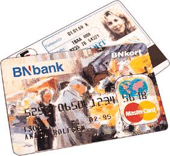

Det skal være enkelt å bruke din BNkonto. Med BNkort har du tilgang på dine penger 24 timer i døgnet, og du kan bruke det til kjøp av varer og tjenester i butikker, bensinstasjoner, hoteller etc.
BNkort er knyttet til MasterCard, verdens mest utbredte betalingssystem, med 12,7 mill. brukersteder i 184 land. Trenger du kontanter i lokal valuta kan disse heves over skranke i 220 000 bankfilialer, eller ved en av de 190 000 minibanker verden over merket MasterCard/EuroCard. Enkelt og trygt på utenlandsturer.
BNkort er et debetkort. Det betyr at all bruk av kortet belastes din BNkonto direkte. Begrensningen er summen du har innestående på kontoen.
BNkort - sikkerhet og ansvar
Som bank er vi opptatt av å tilby deg sikkerhet, også når det gjelder bruk av BNkort. Denne sikkerheten ivaretas når du som kortinnehaver følger de ansvars - og aktsomhetsregler som gjelder for kortbrukere.
Et av sikkerhetspunktene er at BNkort har bilde og underskrift på den ene siden av kortet. I tillegg til din personlige kortkode og din aktsomhet for øvrig skulle dette sikre deg mot misbruk så godt det lar seg gjøre.
Se vår betingelser på BNkort.
![[Oslonett Home]](/gifs/on/oslonett-i.gif)